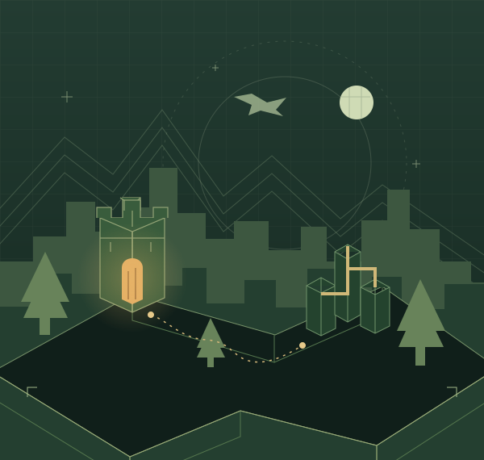

Дальше привычных биомов
Небесные острова, глубины Otherside и огромные подземелья. Редкая находка может стать началом следующего путешествия.
The Aether · Terralith · When Dungeons AriseДраконы над неизведанными землями. Подземелья, из которых хочется вернуться. И своя база, где шестерни превращают находки в новые возможности.
0.3.3-alpha · единый Optimized · Статус испытаний →

01 / ПУТЬ ВЫБИРАЕШЬ ТЫ
От первой экспедиции до собственной промышленной базы. Больше причин выходить за порог — и возвращаться с идеями.
Небесные острова, глубины Otherside и огромные подземелья. Редкая находка может стать началом следующего путешествия.
The Aether · Terralith · When Dungeons AriseДраконы, морские тайны и большие противники. Готовь снаряжение, собирай компанию и выбирай, с кем сегодня сражаться.
Wyrmroost · Aquamirae · Legendary MonstersАвтоматизируй добычу, храни находки в цифровой сети и соединяй механизмы. Технологии помогают твоим приключениям расти.
BuildCraft · IC2 · Create · Mekanism · AE202 / СОБИРАЕМСЯ В ПУТЬ
Графический установщик для Windows 10/11 и привычный официальный Minecraft Launcher. Python и команды в консоли не нужны.
Единый Optimized. Приключения, технологии, авиация и ограниченная физика обломков.
Скачать установщик EXEПубличный GitHub Releases: аккаунт не нужен. Доступен один EXE с обновлением существующей папки, параллельной загрузкой и проверкой хешей. Это тестовая версия.
Проверяем публичный предрелиз. Его файл публикуется только после успешного аудита ClamAV.
Это альфа: запуск до меню проверен. Полёт, выделенный сервер и производительность нового состава ещё требуют игровых испытаний. Сохраняй резервные копии миров.
03 / СНАРЯЖЕНИЕ ЭКСПЕДИЦИИ
Основные компоненты и кандидаты. Поддержка нужной версии Minecraft ещё не означает, что все механики проверены вместе.
Загружаем каталог…
04 / СТРОИМ ВМЕСТЕ
Расскажи о проблеме или предложи следующую находку. Форма подготовит обращение, а опубликуешь его ты на GitHub.
БАГ-РЕПОРТ
Вылет, конфликт управления или странное поведение мира — разберёмся по шагам.
ПРЕДЛОЖЕНИЕ
Новый мир, необычный противник или удобная механика. Объясни, чем идея дополнит TechQuest.
Нужен аккаунт GitHub. Сайт не хранит текст формы: публикацию нужно подтвердить на GitHub. Удаляй из логов токены, IP и личные данные.
ЖУРНАЛ СООБЩЕСТВА
Загружаем открытые обращения…
ПЕРЕД ОТПРАВЛЕНИЕМ
Нет. Если NeoForge 21.1.264 уже установлен для этого Launcher, выбери его в отдельной установке и укажи новую папку игры. При смене версии загрузчика потребуется другая установка NeoForge.
Оставь рабочую папку отдельно для отката. Мир переносится только копией: изменение состава может удалить блоки и предметы. Безопасный автоматический апдейтер пока в плане.
TaCZ исключён из TechQuest («не нужен»). AMW остаётся необязательным экспериментальным дополнением: начинай без него и устанавливай только после проверки совместимости.
Есть ограниченные стартовые настройки Fast, 6 чанков, симуляция 5, до 60 FPS. Это не гарантия скорости: генерация мира, техника и крупные взрывы требуют отдельных замеров на твоём компьютере.
По умолчанию N — камера своего снаряда и переключение на следующий; Shift — выход, F5 — вид. Если N переназначена, найди «Камера снаряда» в управлении Incoming.
СЛЕДУЮЩИЙ РУБЕЖ
Общий состав, проверяемый установщик, автоматические проверки и реальный запуск до меню.
Полёт и посадка, механики модов, выделенный сервер, нагрузка и сохранения.
Установщик с выбором версии и откатом. Управление с геймпада — после проверки самолётов.